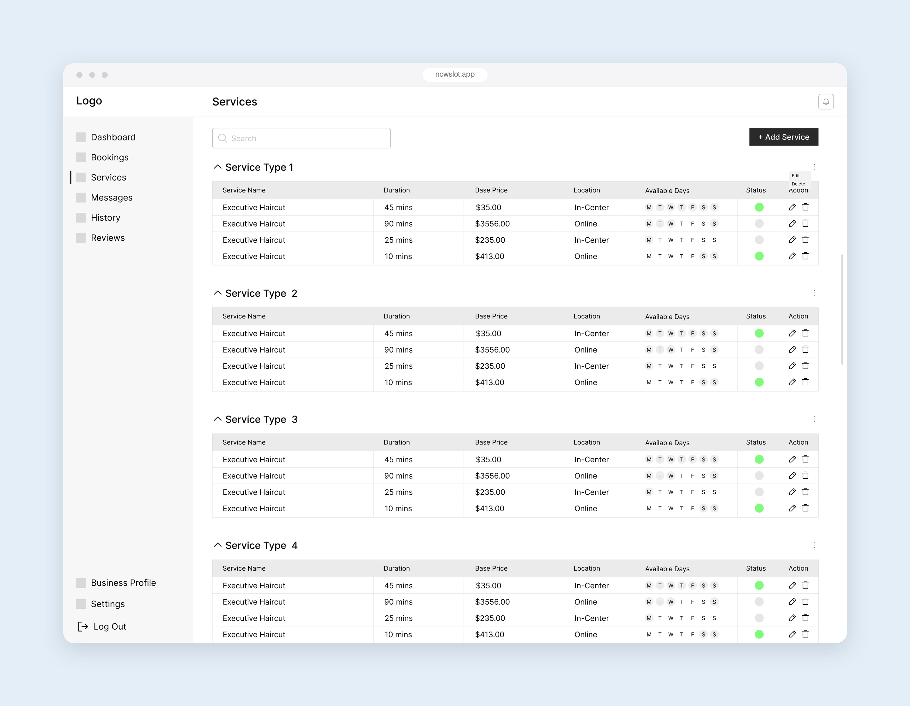
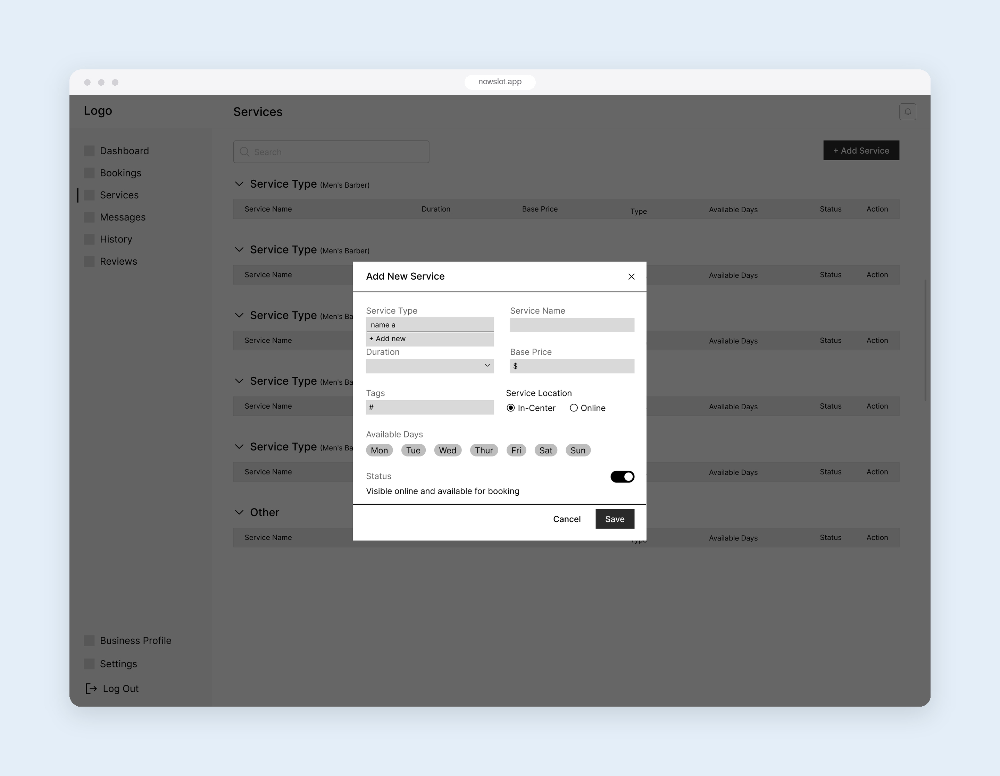
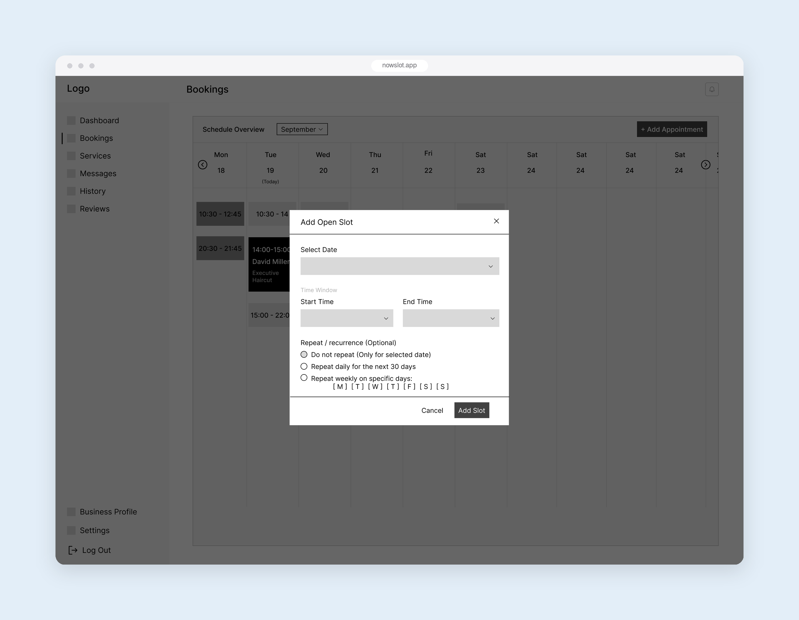
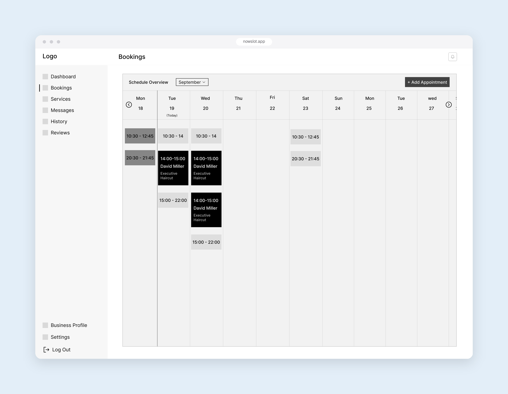
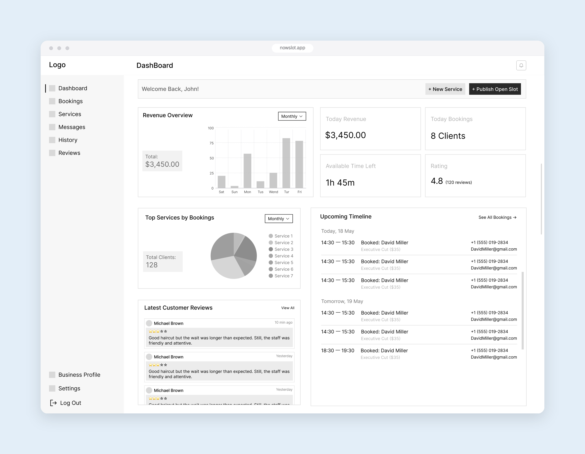

Context
Nowslot shows the free time of local businesses for the next 48 hours. Customers can book a service at short notice. Businesses fill time that would otherwise be lost: an empty chair or an unbooked court earns nothing once the hour has passed.
This case study focuses on the business side: how a business sets up its services, publishes its free time, and keeps track of bookings.
The first question: which businesses fit?
The client wanted every kind of business on the platform. We looked at different types of services and found that this model doesn't work for all of them. Selling free time only makes sense when a service has a fixed duration and a predictable price, and when the business's capacity is measured in time or seats.
Mapping the product
The business and the customer have different goals, so I mapped them as two connected panels. The business panel is built around four jobs: see how the day is going, publish free time, manage services, and handle bookings.
Setting up services once
A business adds its services once: the service type, name, duration, base price, tags, where it's offered (in the business or online), and the days it's available. Services are grouped by type, and a status toggle controls whether each one is visible for booking, so a business can pause a service without deleting it.


Publishing free time
The developers defined the logic for how free time and bookings are handled. I designed the screens on top of it.
To publish free time, a business picks a date and a time window. Because many businesses have the same gaps every week, the same form can repeat the window daily for the next 30 days, or weekly on chosen days, so they don't have to enter it again and again.

On the bookings calendar, open windows and confirmed bookings sit side by side, each booking showing the customer and the service, so a business sees at a glance which time is still free.

Seeing the day at a glance
The dashboard brings together what a business owner checks first: today's revenue and bookings, how much free time is left, their rating, the upcoming bookings for today and tomorrow, and recent reviews. Publishing new free time is one click away from here.

Outcome
In two weeks, I delivered the sitemap, user flows and wireframes for the business and customer panels. The personas we designed for were based on assumptions, not research. The product is in development, so there is no data from real users yet.
What I learned
- Define the scope before designing. The client wanted every kind of business, but asking "who does this model actually work for?" before drawing the first screen saved a lot of design that would have gone unused.
- Saying no, with reasons, is part of the job. Because I explained my reasons clearly, the team could review them and decide together, instead of going on opinion.
- Designing on top of the developers' logic is faster. Once the developers defined how free time is handled, I could focus on the experience instead of guessing how the system would work.
- Small details save the most time. Repeating a time window looks like a minor option, but for an owner whose free hours are the same every week, it means not entering them again and again.